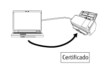

Visão geral
O Network Setup Tool for fi Series é um aplicativo utilizado para conectar um scanner de imagens fi Series a uma rede, para disponibilizar o scanner.
O Network Setup Tool for fi Series é fornecido com as ferramentas seguintes.
O modelos de scanners suportados variam, dependendo da ferramenta que é usada para o modelo. Verifique antecipadamente se o nome do modelo do scanner que está usando é um dos nomes dos modelos de scanners que são suportados por cada ferramenta. Para mais detalhes sobre os modelos de scanners suportados por cada ferramenta, consulte Modelos de scanners suportados.
Ferramenta de seleção do scanner
Esta ferramenta é para seleção de um scanner que deseja usar a partir de um computador.
Pode selecionar um único scanner entre os scanners conectados em uma rede.
Quando você seleciona o modelo fi-8950, fi-8930, fi-8820, fi-8040, fi-8190, fi-8290, fi-8170, fi-8270, fi-8150 ou fi-8250, também pode executar as operações a seguir.
Inicie o Configurações da rede do fi Series (em um navegador da web) a partir da janela [Ferramenta de seleção do scanner] para configurar as definições do scanner
Inicie o Software Operation Panel do seu computador para configurar as definições do scanner
Para detalhes sobre o Configurações da rede do fi Series (em um navegador da web) e Software Operation Panel, consulte o Guia do Operador' do scanner.

Ferramenta de configuração do endereço IP
Esta ferramenta é para definição de um endereço IP, nome do scanner, informações relacionadas a segurança e outras informações da rede.
Ferramenta de registro de certificação
Esta é uma ferramenta para registrar um certificado em um scanner para conectar o scanner em uma rede que precisa de um certificado através de Wi-Fi.
Após registrar um certificado no scanner, configure as configurações de Wi-Fi na tela de toque do scanner.
Os certificados que podem ser registrados são os seguintes:
Certificado de cliente: Arquivo do formato PKCS#12 (*.p12, *.pfx)
Certificado CA: Arquivo do certificado CA (*.cer, *.crt, *.der, *.pem)

Button Event Manager
Esta é uma ferramenta para especificar um aplicativo de digitalização de imagens que deseja iniciar quando um botão em um scanner é pressionado.
Você precisa usar a Ferramenta de seleção do scanner para configurar um scanner conectado em uma rede para poder usá-lo em um computador.